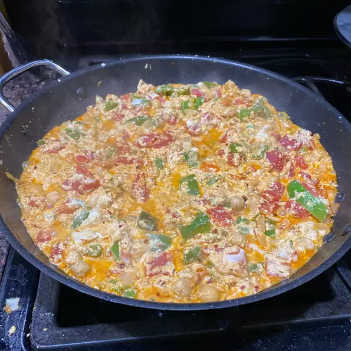

Panner tikka
¼ cup butter
1 pound paneer, cut into 1/2-inch cubes
2 onions, finely chopped
1 green bell pepper, chopped
2 jalapeno peppers, chopped
1 tablespoon ground cashews
1 teaspoon garlic paste
1 teaspoon ginger paste
1 teaspoon cayenne pepper
1 teaspoon ground cumin
1 teaspoon ground coriander
1 teaspoon garam masala
1 (16 ounce) can tomato sauce
1 pint half-and-half
1 teaspoon salt, or to taste
Direction to make
Step 1
Melt butter in a skillet over medium heat;
cook and stir paneer until golden, about 5 minutes.
Add onions,
green bell pepper,
jalapeno peppers,
cashews,
garlic paste,
ginger paste,
cayenne pepper,
cumin,
coriander,
and garam masala to paneer;
cook and stir until fragrant and evenly coated, about 1 minute.
Step 2
Mix tomato sauce, half-and-half,
and salt into paneer mixture;
simmer until thickened,
about 30 minutes.
The Picture of Panner tikka
